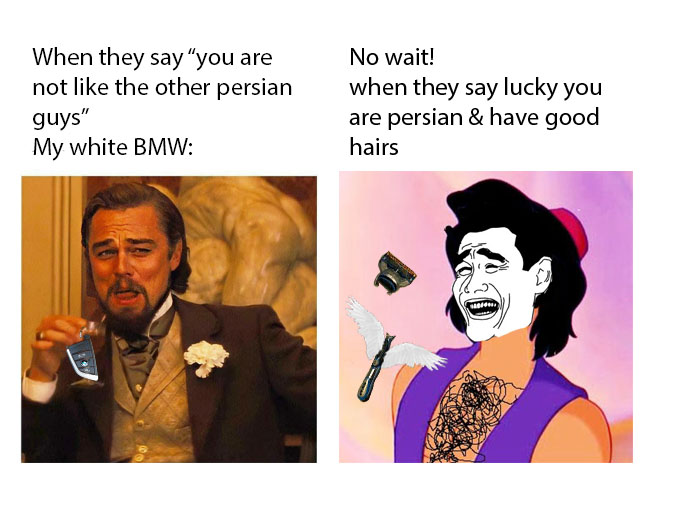

A mashup (also mesh, mash up, mash-up, blend, or bootleg) is a creative work, usually in a form of a song, created by blending two or more pre-recorded songs, usually by superimposing the vocal track of one song seamlessly over the instrumental track of another, increasing the tempo and pitch while adding or reducing gaps to make it flow. To the extent that such works are "transformative" of original content, in the United States they may find protection from copyright claims under the "fair use" doctrine of copyright law. -- wikipedia
1. learn the technical definition of a meme 2. understand the new media strategy of mashup 3. practice both along with image manipulation to create a contemporary work of art
